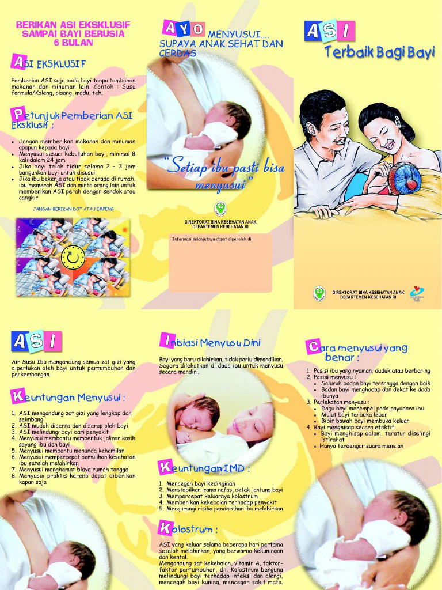

ASI eksklusif adalah pemberian ASI (air susu ibu) ke bayi baru lahir sampai bayi berusia 6 bulan. Sampai waktu tersebut, bayi hanya diperbolehkan menerima ASI dan tidak diperbolehkan menerima makanan atau minuman lainnya, termasuk air putih. Setelah bayi berusia 6 bulan, bayi kemudian diperkenalkan dengan makanan lain. Namun, sebaiknya pemberian ASI masih terus dilanjutkan sampai bayi berusia 2 tahun.
Manfaat ASI Bagi bayi, yaitu :
- ASI meningkatkan daya tahan tubuh bayi
- ASI sebagai Nutrisi
- Melindungi dari serangan alergi karena mengandung lgA
- Membantu pembentukan rahang yang bagus
- Mengurangi risiko terkena penyakit diabetes, kanker pada anak dan diduga mengurangi kemungkinan menderita penyakit jantung
- Mengupayakan pertumbuhan yang baik dan menunjang perkembangan motorik bayi.
Manfaat ASI bagi Ibu, yaitu :
- Mudah, murah, praktis dan tersedia kapan saja.
- Mempercepat involusi/memulihkan dari proses persalinan dan dapat mengurangi perdarahan karena otot-otot di rahim mengerut, otomatis pembuluh darah yang terbuka itu akan terjepit sehingga pendarahan dapat berhenti.
- Mencegah kehamilan karena kadar prolaktin yang tinggi menekan hormon FSH sehingga ovulasi dapat mencapai 99%, apabila ASI diberikan secara terus-menerus tanpa tambahan selain ASI.
- Meningkatkan rasa kasih sayang dan rasa nyaman antara ibu dan anak.
- Mengurangi risiko penyakit kanker.
- Membantu ibu menurunkan berat badan setelah melahirkan.
- Menurunkan risiko DM tipe 2.
Cara Penyimpanan ASI perah, yaitu :
- Simpan ASIP dalam kantung plastic wadah ASI maupun botol ASI kaca, gelas.
- Beri tanggal dan jam pada masing-masing wadah ASI.
- Jika di simpan dalam ruangan suhu berkisar 19°C s.d 26°C untuk ASIP SEGAR lama penyimpanannya 6-8 jam di ruang ber AC dan 4 jam di ruang non AC. Sedangkan untuk ASIP beku yang sudah dicairkan lama penyimpanan sekitar 4 jam.
- Jika disimpan dalam kulkas suhu berkisar <4°C lama penyimpanannya sekitar 2-3 hari
- Jika disimpan di freezer pada lemari es 1 pintu suhu berkisar -18°C s.d 0°C lama penyimpanannya sekitar 2 minggu.
- Jika disimpan di freezer pada lemari es 2 pintu suhu berkisar -20°C s.d -18°C lama penyimpanannya sekitar 3-4 bulan
Cara pemberiannya adalah :
Sebelum diberikan kepada bayi, rendam dalam wadah berisi air hangat dan gunakan gelas kaca/ keramik dan mangkok kaca/ keramik, jangan menggunakan bahan dari plastic ataupun melamin. Jangan langsung menghangatkan ASI dengan api karena akan merusak kandungan gizi dalam ASI.